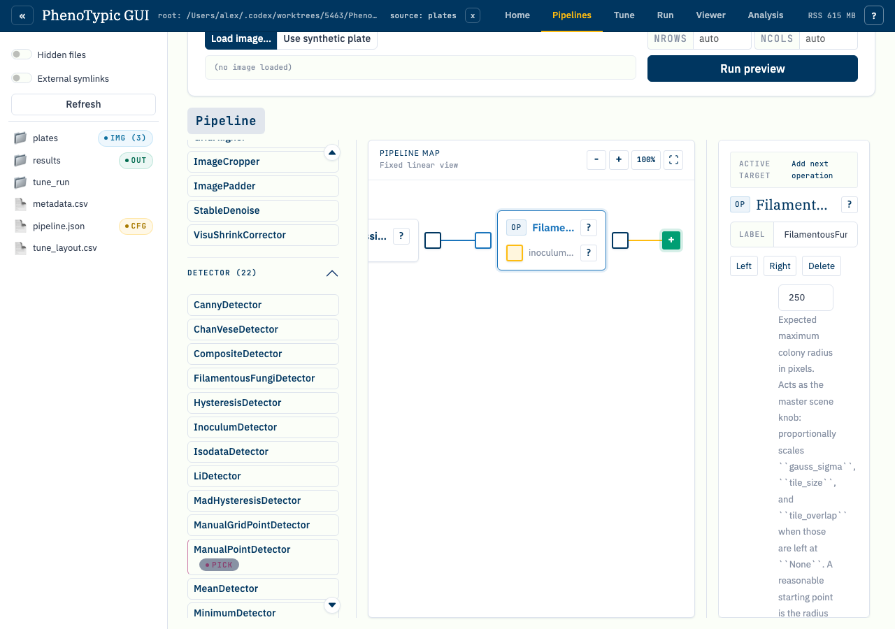
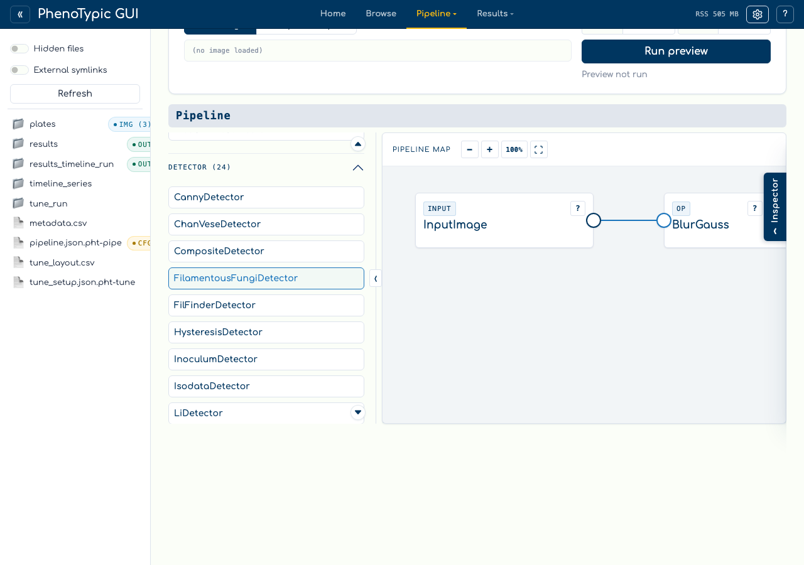
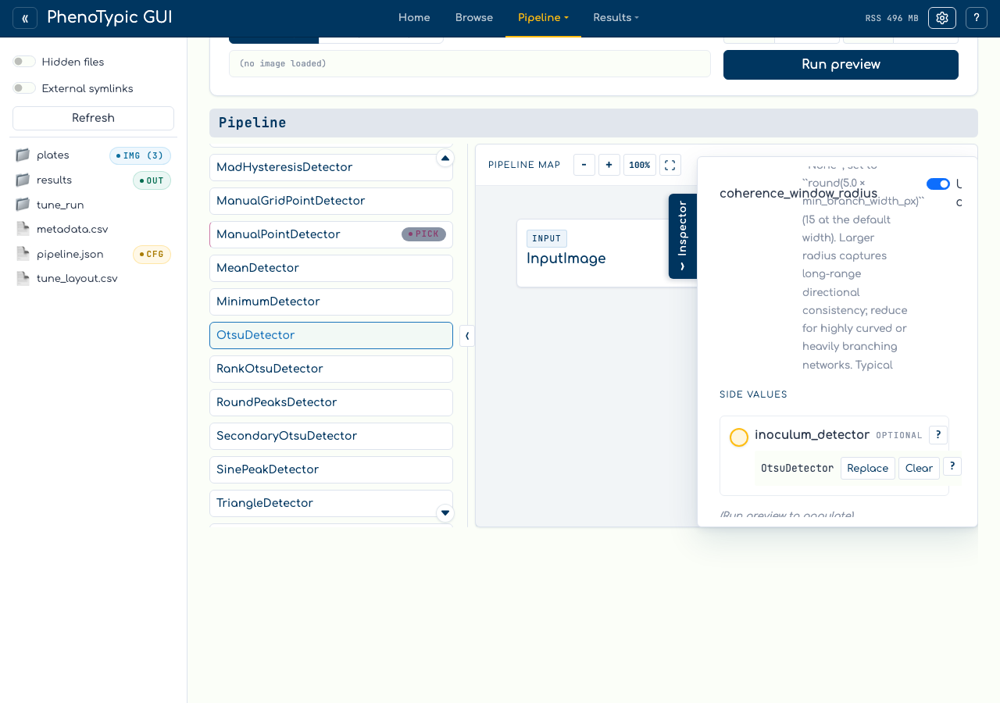

Fix validation issues#
The builder validates the DAG continuously as you author it. When a
rule fires, the toolbar shows a red issue badge with the count of
unresolved issues, and the offending block(s) carry a red border + a
! marker. The Run preview and Save buttons disable until the
DAG is clean.
This tutorial walks through one of the more common triage paths: introducing a stranded block (no incoming image wire), surfacing the validator’s complaint, and clearing it.
Step 1 — Introduce an issue#
Drop a GaussianBlur → OtsuDetector ribbon, then add a third block
(SmallObjectRemover) without wiring it into the existing ribbon. The
SmallObjectRemover is now stranded: it has no incoming image flow, so
its preview can never resolve. The toolbar issue badge lights up
showing the issue count.

The validator runs against the canvas state on every mutation, so the badge updates within ~50 ms of the drop. Issues are categorised into blocking (preview/save disabled) and advisory (highlighted but still runnable); a stranded image consumer is a blocking issue because the pipeline cannot execute without it.
Step 2 — Pan to the offender#
Click the issue badge or open the toolbar’s issue list and click the
specific row. The canvas pans to the offending block, the block
highlights with a red border + ! marker, and the inspector shows
the validator’s explanation (e.g. “Block has no incoming image wire;
either wire it from a producer or delete it”).

The issue-click is non-destructive — you can use it as a navigation aid even when you don’t intend to resolve the issue immediately (e.g. while reviewing a large pipeline someone else authored).
Step 3 — Resolve the issue#
Either wire the orphan into the main ribbon (drag from the
OtsuDetector output port to the SmallObjectRemover input port) or delete
it via Delete selected in the toolbar. The validator re-runs on
mutation, clears the issue, hides the red border, and re-enables
Run preview + Save.

The cleared state restores the canvas to a runnable pipeline. The
inspector’s preview thumbnail repopulates the next time you click
Run preview.
Reference#
The validator enforces six blocking rules + one advisory hint:
Every consumer needs an image input — no stranded blocks.
No image-flow cycles — the DAG must remain acyclic on image-flow edges. Aux edges are exempt (they’re not part of the main flow).
No fan-out on image-output ports — each producer’s right-edge output can feed exactly one consumer’s image input.
Aux wires must target compatible types — the producer’s output type must satisfy the consumer’s aux port type constraint (e.g. an
ObjectDetectorcan wire into aninoculum_detectorslot but aRefinercannot).Containers must have a non-empty body — an empty
Pipelinecontainer is a no-op and the validator surfaces it as blocking.Input Image sentinel cannot be deleted — every scope’s sentinel anchors its
Input Imagesource; the validator refuses to clear it.
The single advisory hint covers unused producers (a block whose output isn’t wired into anything downstream). Advisories highlight the block in amber rather than red and do not block preview.
Where to next#
Wire an aux in the DAG — clean authoring flow without issues.
Wire a Pipeline as aux — containers and their unique validation paths.
GUI hub guide — full reference for every panel, store, and admonition in the hub.